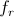
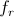
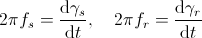
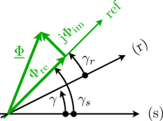

Information
This is the library of quasi static fundamental wave models for multi phase electric machines. This is complementary library with the transient machine models of
FundamentalWave.
Extends from Modelica.Icons.Information (Icon for general information packages).
Package Contents
Information
Reference frames
Quasi static magnetic ports contain the complex magnetic flux (flow variable) and the complex magnetic potential difference (potential variable) and a reference angle. The relationship between the different complex phasors with respect to different references will be explained by means of the complex magnetic flux. The same transformation relationships also apply to the complex magnetic potential difference. However, the discussed relationships are important for handling connectors in the air gap model, transform equations into the rotor fixed reference frame, etc.
Let us assume that the air gap model contains stator and rotor magnetic ports which relate to the different sides of the machine. The angle relationship between these ports is
 ,
,
where
 is the connector reference angle of the stator ports,
is the connector reference angle of the stator ports,
 is the connector reference angle of the rotor ports, and
is the connector reference angle of the rotor ports, and
 is the difference of the mechanical angles of the flange and the support, respectively,
multiplied by the number of pole pairs,
is the difference of the mechanical angles of the flange and the support, respectively,
multiplied by the number of pole pairs,
 .
The stator and rotor reference angles are directly related with the electrical frequencies of the
electric circuits of the stator,
.
The stator and rotor reference angles are directly related with the electrical frequencies of the
electric circuits of the stator,
 ,
and rotor,
,
respectively, by means of:
,
and rotor,
,
respectively, by means of:

This is a strict consequence of the electro magnetic coupling between the quasi static electric and the quasi static magnetic domain.
Fig. 1: Reference frames of the quasi static fundamental wave library
|

|
The complex magnetic flux with respect a stator and rotor magnetic port are equal,
=Phi,re+jPhi,im.png) ,
,
but the reference phase angles are different according to the relationship explained above. The stator and rotor reference angles refer to quasi static magnetic connectors. The complex magnetic flux of the (stator) port with respect to the stator fixed reference frame is then calculated by
 .
.
The complex magnetic flux of the (rotor) magnetic port with respect to the rotor fixed reference frame is then calculated by
 .
.
The two stator and rotor fixed complex fluxes are related by
 .
.
Extends from Modelica.Icons.Information (Icon for general information packages).
Information
Library officers
Dr. Christian Kral
Electric Machines, Drives and Systems
A-1060 Vienna, Austria
email: dr.christian.kral@gmail.com
Anton Haumer
Technical Consulting & Electrical Engineering
D-93049 Regensburg, Germany
email: a.haumer@haumer.at
Extends from Modelica.Icons.Contact (Icon for contact information).
Information
Version 3.2.3, 2018-12-12
Version 3.2.2, 2015-02-02
- Restructuring of components in Interfaces and BasesClasses
- Migration of library to MSL trunk
- Update and improvement of documentation
- Added new component:
- Removed parameter text from icon layer for reluctance and permeance model
- Fixed issues of ticket
#1524
- Restructured cage models with reluctance instead of inductance model according to ticket
#1537
- Bug fixes according to
#1226
- Added magnitude and argument of complex magnetic potentials, magnetic fluxes, voltages and currents in interface, electromagnetic coupling and machine models, see #1405
- Added active, reactive and apparent power and power factor in interface and machine models, see
#1405
- Added new interface model
PartialTwoPortExtended
to simplify consistent inclusion of variables, see
#1405
- Changed icon and location of terminal box according to
#1706
Version 0.4.1, 2013-12-18
- Renamed base magnetic port to MagneticPort
- Bug fix of single to multi phase converter
- Bug fix of phase number propagation in SaliencyCageWinding fixed
- Improved documentation of library
- Added current controlled SMR example and indicated SMR inverter example as obsolete
- Improved example of mains supplied SMPM with damper cage
Version 0.4.0, 2013-11-13
- Renamed all machine class names according to
#1348
Version 0.3.0, 2013-11-07
- Renamed the library from QuasiStationaryFundamantalWave to QuasiStaticFundamantalWave according to
#1344
Version 0.2.5, 2013-11-06
- Changed implementation of symmetrical components: symmetricTransformationMatrix(m) is now
multiplied by numberOfSymmetricBaseSystems(m) in order to overcome differences in calculation
of current and voltage symmetrical components. The symmetrical components of a system of
even phase numbers are now equal to the symmetrical components of one corresponding base system.
- Improved examples package and removed SMPM_Inverter example
Version 0.2.4, 2013-10-02
- Implemented induction machine with squirrel cage example with inverter
- Alternative implementation of transformation matrix for faster compilation in Dymola
Version 0.2.3, 2013-09-25
- Adapted sine / cosine of QS V/f-converter to match transient behavior
Version 0.2.2, 2013-09-24
- Fixed initialization of examples (changed implementation of QuasiStationary.Sources, added start values for gamma, gammas, gammar)
Version 0.2.1, 2013-09-23
- Implemented permanent magnet synchronous machine example with inverter
Version 0.2.0, 2013-09-01
- Implemented induction machine with slip ring rotor including example
- Implemented magnetic crossing
Version 0.1.0, 2013-08-27
- Documentation of phasor concept
- Connections.branch between electric and magnetic quasi static connectors to handle open circuit and motor operation of machines
- Saliency effects are properly considered
- Electromagnetic coupling with Analog domain is implemented fully quasi static with v = 0 at the electric connectors -- this may have to be changed in the future
- Implemented machine types
- Induction machine with squirrel cage
- Permanent magnet synchronous machine with optional damper cage
- Electrical excited synchronous machine with optional damper cage (may be removed in first release)
- Synchronous reluctance machine with optional damper cage (may be removed in first release)
Extends from Modelica.Icons.ReleaseNotes (Icon for release notes in documentation).
Information
| [Lang1984] |
W. Lang,
"Über die Bemessung verlustarmer Asynchronmotoren mit Käfigläufer für
Pulsumrichterspeisung,"
Doctoral Thesis,
Technical University of Vienna, 1984. |
Extends from Modelica.Icons.References (Icon for external references).
Generated 2018-12-12 12:11:07 EST by MapleSim.